공정 확인 → 직접 조작 → Agent 조사 → 검토 → 조치 결과 → 지식 관리.
Agent·검토·조치 화면은 오늘 저장된 실제 사건을 현재 UI에서 다시 열어 촬영했습니다. 이번 촬영에서 이상 주입부터 전체 흐름을 새로 실행한 것은 아닙니다. 최신 UI로 다시 촬영한 공정·Agent·조치·결과·자료 등록·그래프·모바일 화면과, 제목에 표시한 이전 검증 기록을 구분했습니다. 전체 최신 E2E와 온도 이상 승인 후 회복 검증은 아직 남아 있습니다.
현재 수치·운전 상태와 기동/정지·설정값 적용 패널을 함께 봅니다.
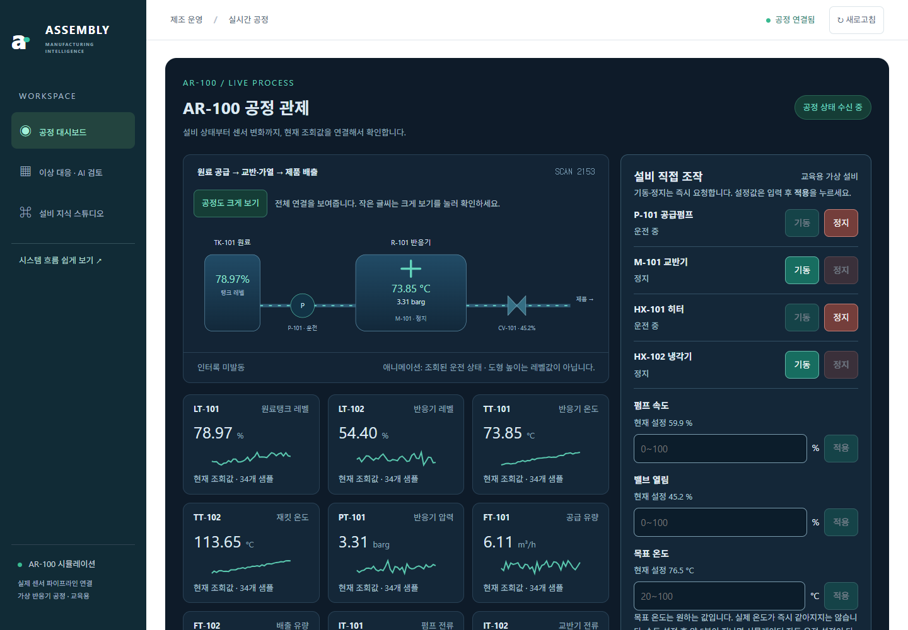
목표 온도 변경과 교반기 정지의 실제 기록입니다. 새로고침 후에도 저장된 이력을 다시 확인합니다.
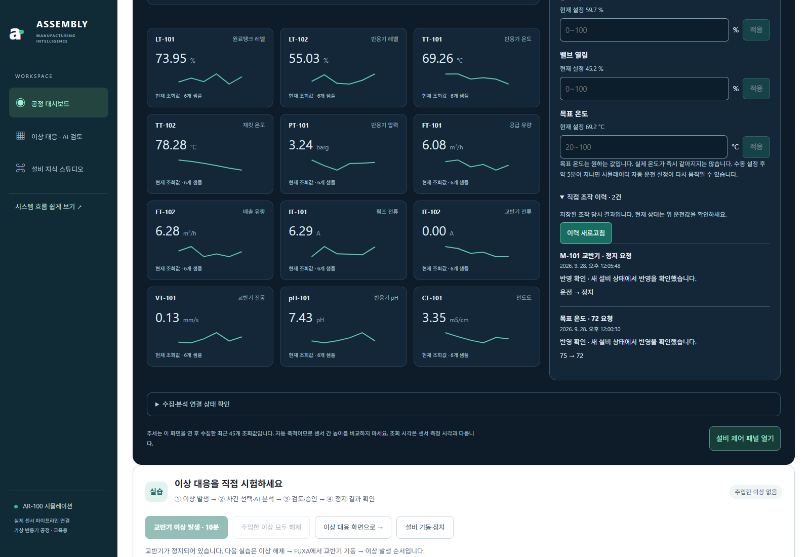
목표를 66.2→60°C로 실제 적용한 뒤 온도 하강을 관측했습니다. 아직 목표 도달 전이라 성공으로 표시하지 않습니다. 이 화면은 운전원 직접 조작 검증이며 Agent 승인 E2E가 아닙니다.
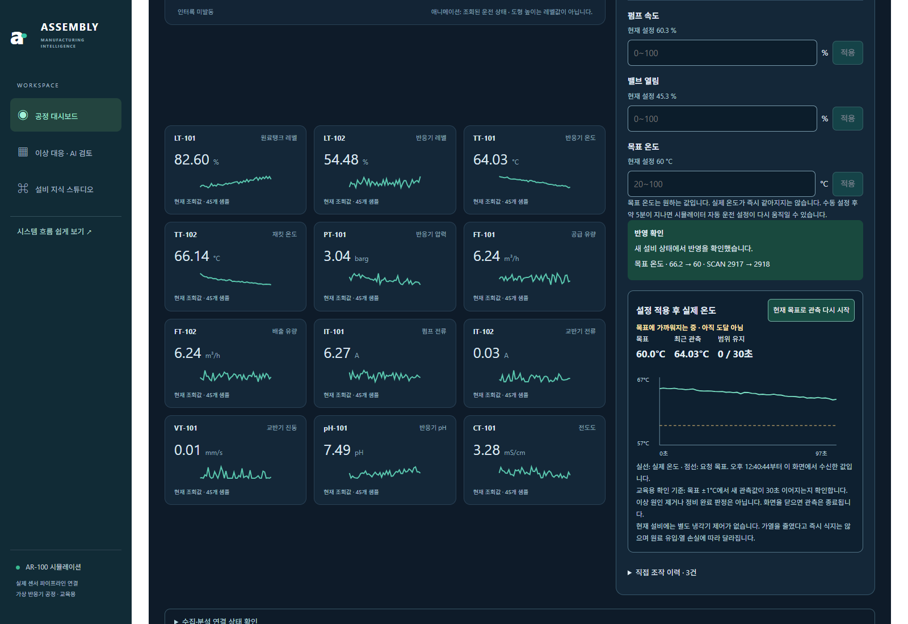
실제 온도가 60.61°C까지 내려갔으나 30초 유지 확인 전에 시뮬레이터 자동 운전이 목표를 바꿨습니다. 이전 목표 관측을 종료하고 성공으로 표시하지 않았습니다.
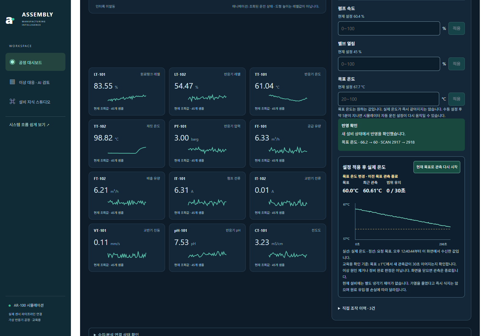
완료된 사건의 업무 흐름과 실제 알람·문서·센서 조회 기록을 표시합니다. 진행 중 화면을 연출한 것이 아닙니다.
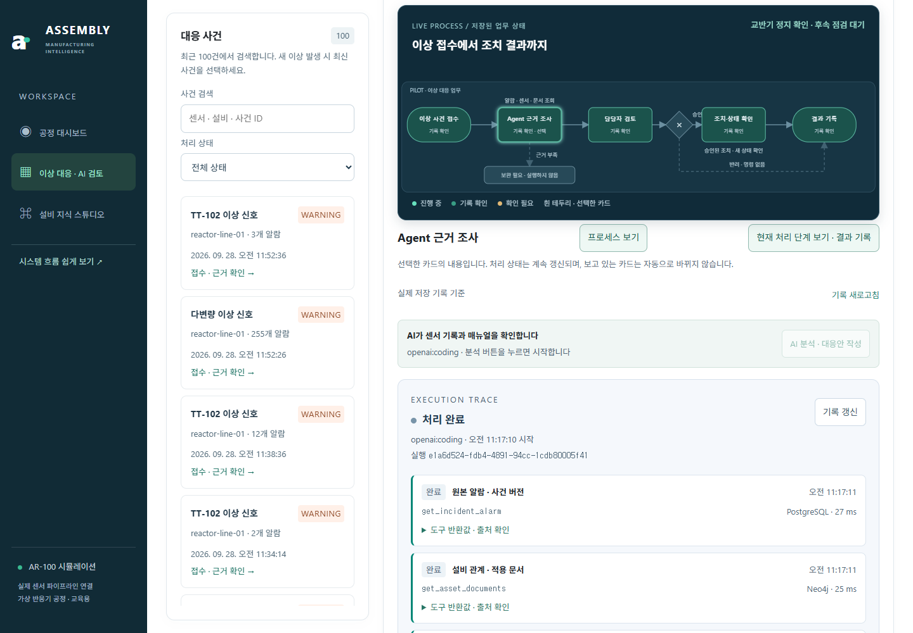
별도의 검토 대기 사건입니다. 기한이 지난 대응안이라 승인 버튼은 차단되며 재분석을 안내합니다. 이 촬영에서 승인하지 않았습니다.
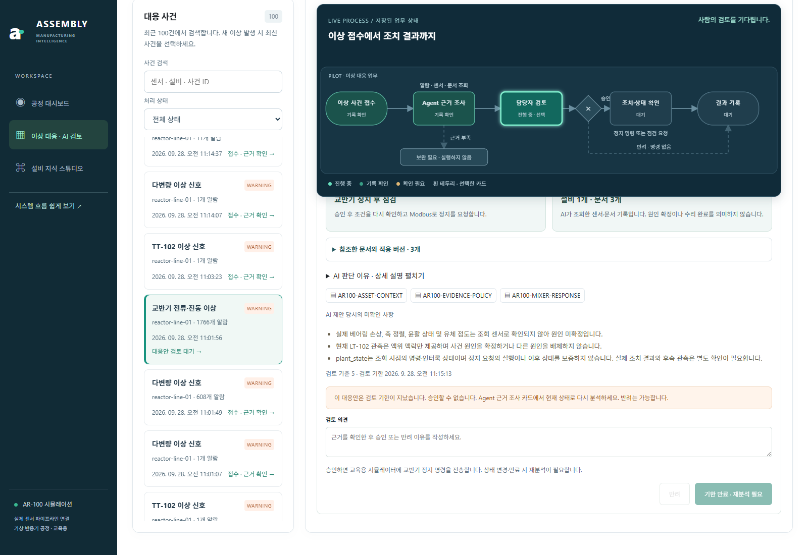
같은 실행에 연결된 실제 승인·조건 확인과 조치 결과를 시간순으로 봅니다. 원본 기록을 펼쳐 볼 수 있습니다. 오늘 저장된 완료 사건을 재열람한 화면입니다.
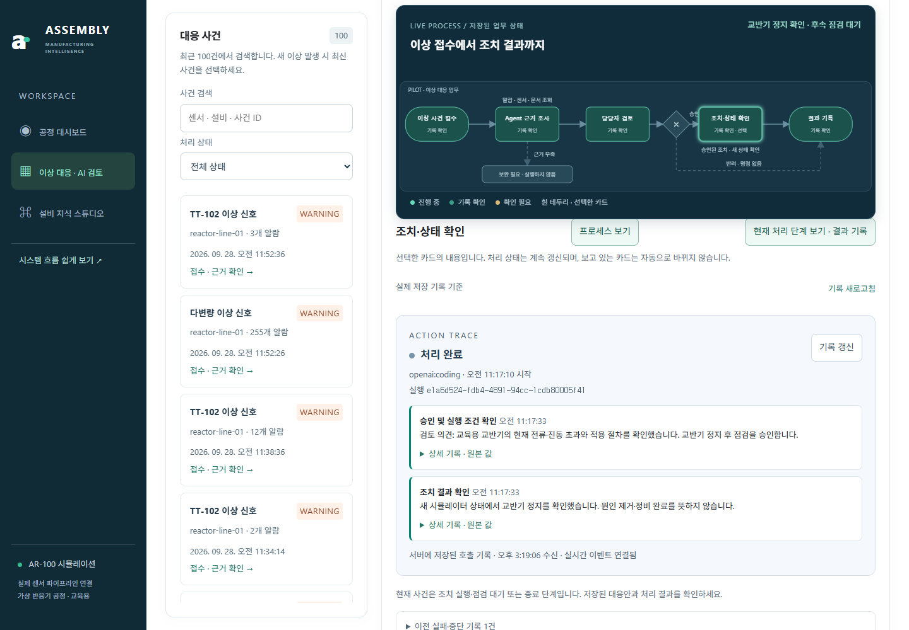
3번의 완료 사건입니다. 저장된 AI 조회 당시 값과 조치 후 확인값을 비교합니다. 설비 정지는 정비 완료와 다릅니다.
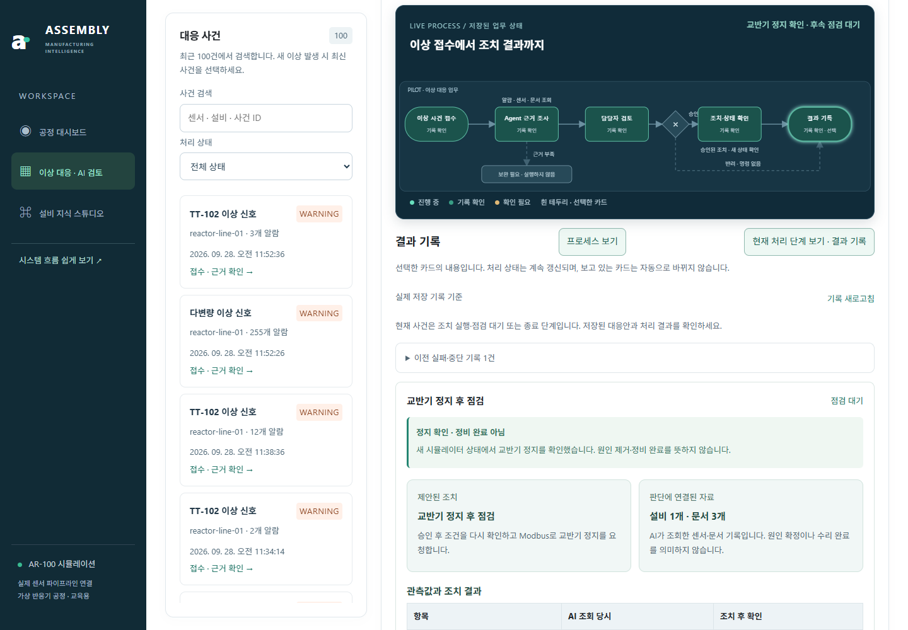
현재 관측과 사건 기록, 적용 문서를 확인하는 화면입니다.
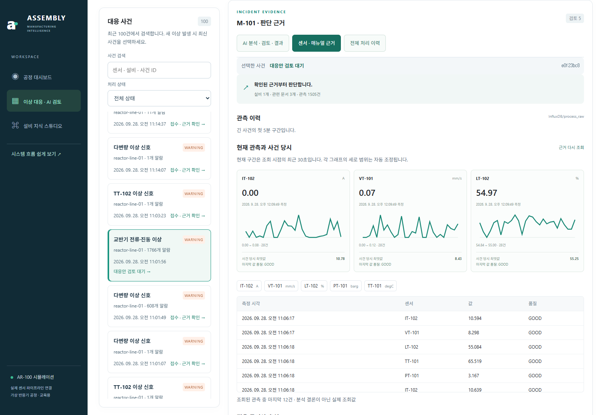
자료 등록·구조 추출·AI 관계 제안과 현재 게시된 지식그래프입니다.
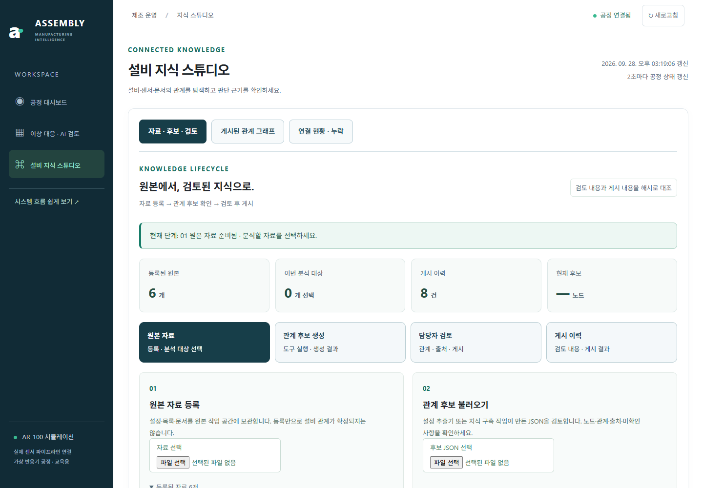
현재 그래프: 49개 노드 · 60개 관계. 센서 소속과 교육용 온도 대응 절차를 근거 검토 후 게시했습니다. 전체 배치에서 TT-101의 연결을 강조한 화면이며, 아래 확대 화면에서 화살표와 관계명을 읽을 수 있습니다.
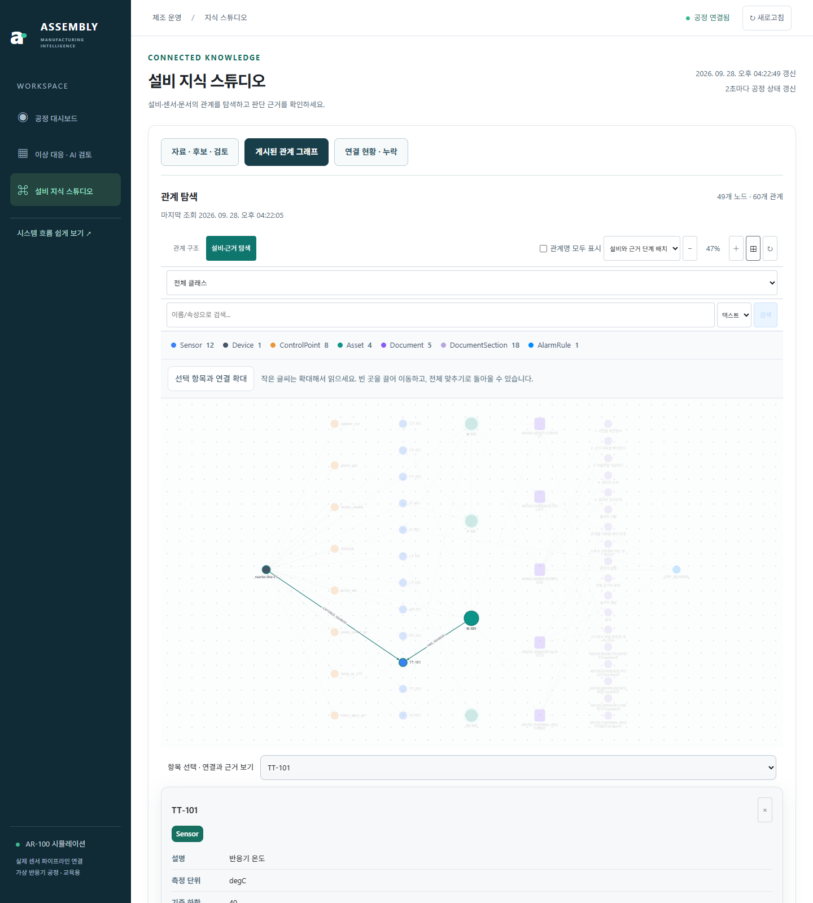
TT-101 선택 후 연결을 확대한 최신 화면입니다. reactor-line-01 → TT-101, R-101 → TT-101의 방향과 관계명을 확인합니다. 이어지는 게시 이력은 이전 검증 당시 화면입니다.
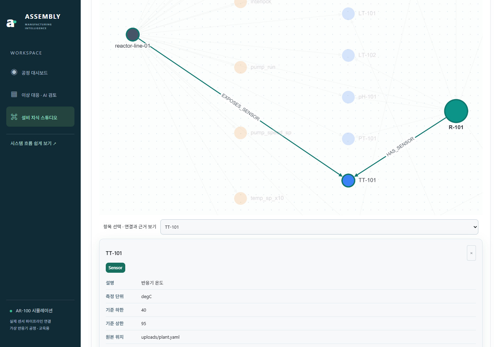
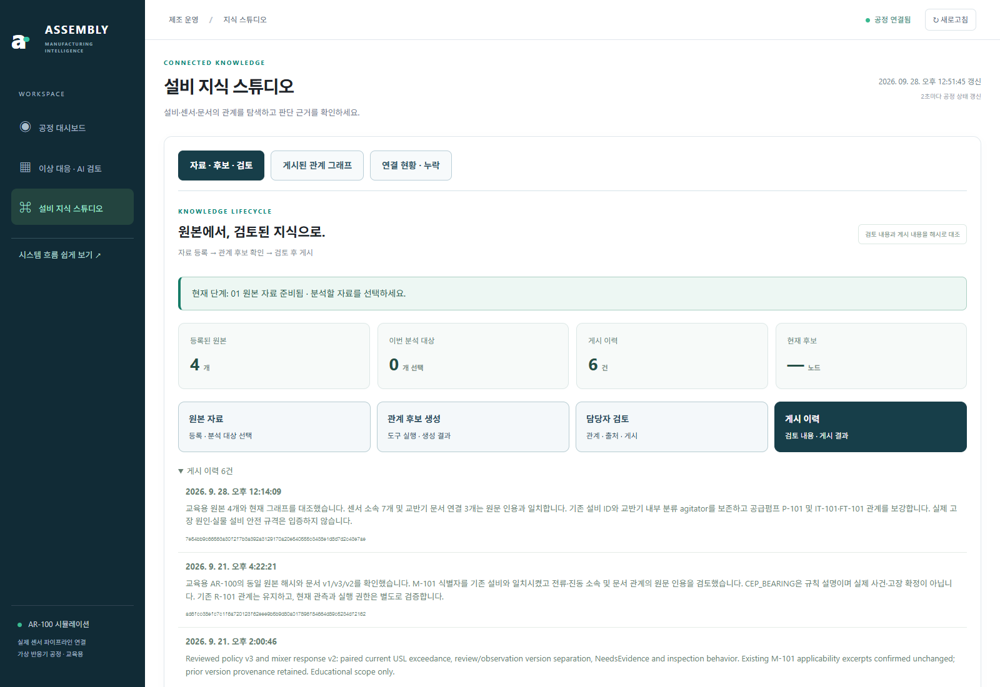
실제 등록 원본 4개에서 구조를 추출한 후보입니다. 센서 단위·기준·원본을 확인하고 게시 조건을 검사했습니다. 이 후보는 게시하지 않았습니다.
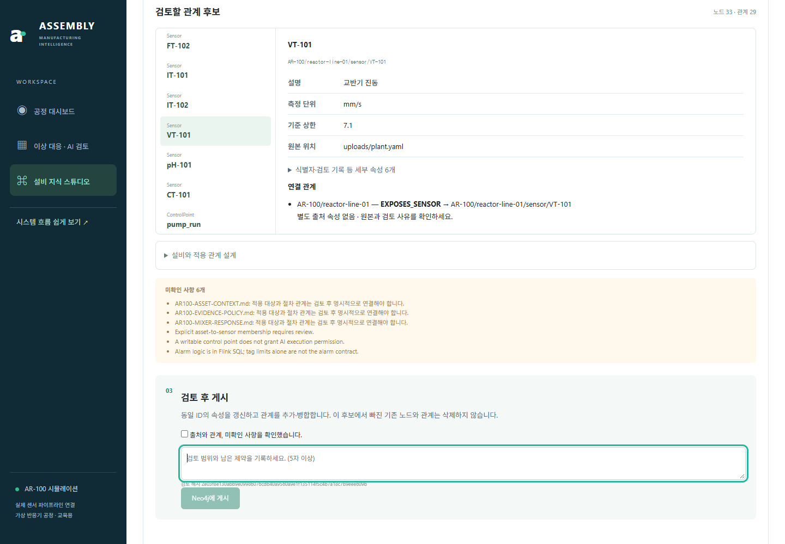
390px 화면에서 공정과 제어를 세로로 이어 봅니다.
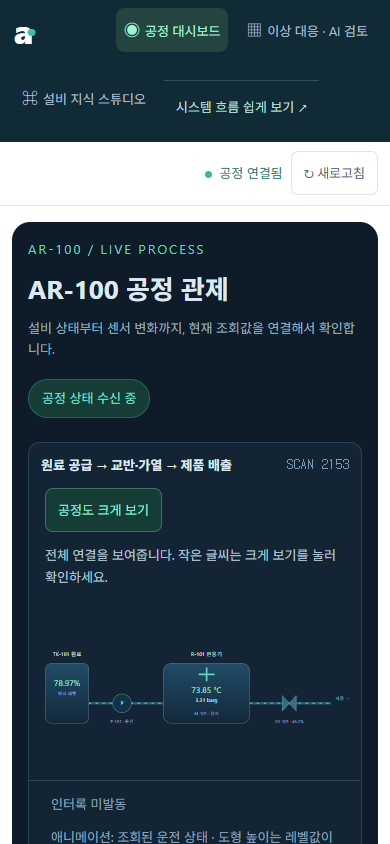
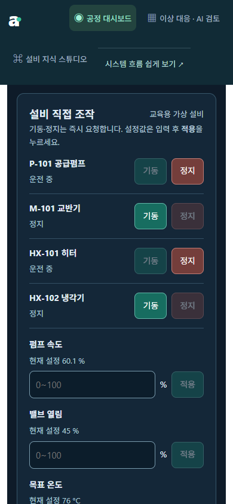